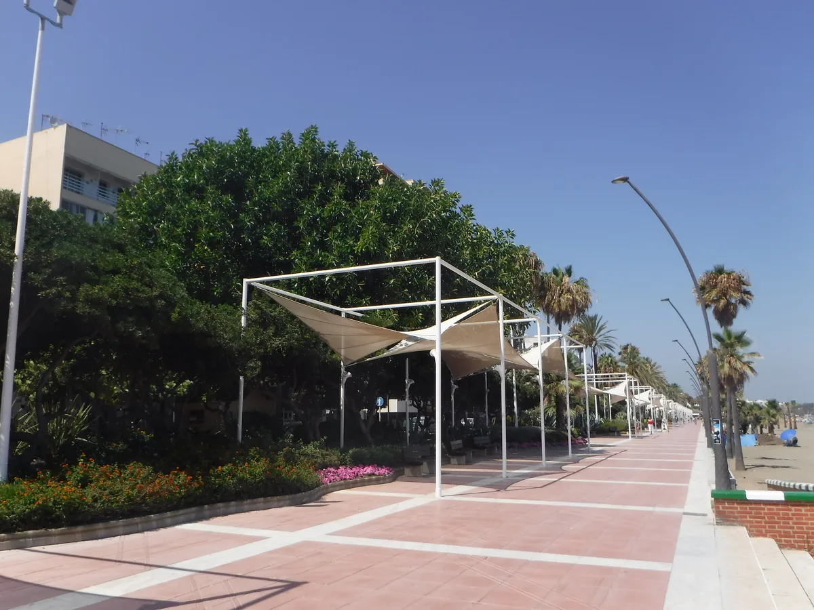
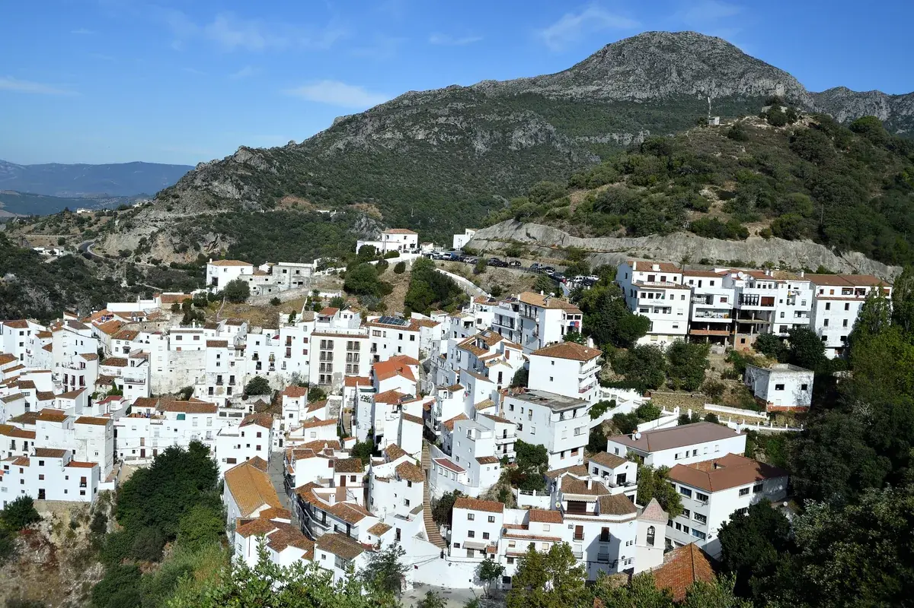

Die Gegend
Von der Promenade zu den Polofeldern
Die sieben Orte, von der Promenade zu den Polofeldern, sind unten beschrieben. Jeder hat eine kurze Schilderung und einen Überblick, was jetzt zu kaufen ist.
San Pedro de Alcántara · Estepona · Casares · Manilva · Sotogrande
Westersol verbindet Käufer mit geprüften, wirklich guten lokalen Maklern zwischen San Pedro de Alcántara und Sotogrande. Sie sagen uns, wonach Sie suchen. Wir wählen persönlich einen Makler aus, dem wir vertrauen, und stellen Sie vor, ohne Kosten für Sie. Der Makler übernimmt die Besichtigungen und das Gespräch über den Preis. Der Kaufratgeber und die Ortsratgeber helfen Ihnen bei der Vorbereitung.

Diese Küste ist nicht ein Markt. San Pedro fühlt sich wie ein richtiger Ort an, mit einer langen Strandpromenade. Estepona hat eine Altstadt und einen arbeitenden Hafen. Weiter westlich steigen die Dörfer den Hang hinauf, mit Blick auf Gibraltar und, bei klarem Wetter, auf Afrika. Jeder Ort hat sein Tempo und seine Preise. Das ist der Anfang des Ratgebers. Der vollständige Kaufratgeber und die Ortsratgeber gehen weiter. Wenn Sie so weit sind, stellen wir Sie einem vertrauenswürdigen lokalen Makler vor.
Die sieben Orte, von der Promenade zu den Polofeldern, sind unten beschrieben. Jeder hat eine kurze Schilderung und einen Überblick, was jetzt zu kaufen ist.
Bei einer Bestandsimmobilie in Andalusien zahlen Sie 7 Prozent Grunderwerbsteuer (ITP). Bei einem typischen Neubau sind das 10 Prozent MwSt. plus 1,2 Prozent Stempelsteuer (AJD), zusammen 11,2 Prozent. Hinzu kommen Notar, Grundbuch und in der Regel ein Anwalt — Posten ohne festes gesetzliches Prozent. Die oft genannte Spanne von etwa 10 bis 13 Prozent extra ist eine Richtgröße, kein Angebot. Der Kaufratgeber nennt die Quellen.
Zuerst eine NIE und ein Anwalt, der für Sie arbeitet, nicht für den Verkäufer. Dann eine Reservierung, der Arras-Vertrag, die Due Diligence und die escritura beim Notar. Ein Kauf dauert oft Monate. Deshalb fragen wir nach Ihrem Zeitraum: innerhalb von zwölf Monaten, oder später.
Den vollständigen Kaufratgeber lesen Ortsratgeber






Ein Überblick über zum Verkauf stehende Häuser in jedem der sieben Orte, aufgenommen von Idealista am 15. November 2026. Das sind keine Angebote auf dieser Website.

San Pedro de Alcántara hat eine lange Strandpromenade und ein Zentrum, das sich noch lokal anfühlt, mit Guadalmina daneben.
1.079 Immobilien im Angebot (Idealista, 15. November 2026).
Beispielpreise an diesem Tag lagen zwischen 395.000 Euro und 1.395.000 Euro.

Estepona ist die Altstadt, der Hafen und, dahinter, die Sierra Bermeja.
5.580 Immobilien im Angebot (Idealista, 15. November 2026).
Beispielpreise an diesem Tag lagen zwischen 269.000 Euro und 1.395.000 Euro.

Casares liegt oben am Hang, ein weißes Dorf, mit Golf und Meerblick an der Küste darunter.
809 Immobilien im Angebot (Idealista, 15. November 2026).
Beispielpreise an diesem Tag lagen zwischen 330.000 Euro und 775.000 Euro.

Manilva ist ein Alltagswohnort mit einer Promenade am Meer.
98 Immobilien im Angebot im Ort selbst, nicht in der weiteren Gemeinde (Idealista, 15. November 2026).
Beispielpreise an diesem Tag lagen zwischen 250.000 Euro und 750.000 Euro.

Sabinillas ist ein Alltagswohnort mit einer Promenade am Meer.
149 Immobilien im Angebot (Idealista, 15. November 2026).
Beispielpreise an diesem Tag lagen zwischen 220.000 Euro und 1.100.000 Euro.

La Duquesa dreht sich um seinen Yachthafen.
235 Immobilien im Angebot in La Duquesa und Puerto de la Duquesa zusammen (Idealista, 15. November 2026).
Beispielpreise an diesem Tag lagen zwischen 275.000 Euro und 699.000 Euro.

Sotogrande ist Polo, Golf, der Yachthafen und die geschlossenen Anlagen, mit Alcaidesa daneben.
879 Immobilien im Angebot (Idealista, 15. November 2026).
Beispielpreise an diesem Tag lagen zwischen 279.000 Euro und 1.350.000 Euro.
Richtwerte, basierend auf öffentlichen Angeboten am 15. November 2026.
Das sind Beispiele für die Art von Neubauten, die Sie zwischen San Pedro de Alcántara und Sotogrande finden. Es sind keine Angebote. Westersol hat keine Partnerschaft mit einem Projekt, und wir verkaufen selbst nichts vom Plan.
Neue Wohnanlagen, nur einen kurzen Spaziergang von der Promenade und dem Sand entfernt, nah am Ortszentrum.

Wohnanlagen in erster und zweiter Linie an der Küste zwischen San Pedro und Estepona.

Reihenhäuser und Villen oberhalb von Estepona, viele mit Blick aufs Meer und die Sierra Bermeja.
Wohnungen um die Golfplätze an der Küste von Casares, einschließlich der Gegend um Finca Cortesín.

Häuser mit Blick auf den Yachthafen, und neue Wohnungen wenige Minuten vom Hafen.

Neue Villen und Wohnungen in den Anlagen, nahe am Golf, den Polofeldern und dem Yachthafen.
Nach der Anfrage kann der Partner-Makler Ihnen die Projekte zeigen, die zu diesem Zeitpunkt tatsächlich zu kaufen sind.

Unsere Stärke ist einfach: Wir wählen persönlich vertrauenswürdige, wirklich gute lokale Makler aus und stellen Sie einem von ihnen vor, ohne Kosten für Sie. Wir sind kein Maklerbüro und keine Partei in der Verhandlung.
Budget, Zeitraum, Lage, Immobilientyp, und ob Sie bar oder mit einer Hypothek kaufen.
Wir prüfen Ihre Anfrage und wählen einen lokalen Makler, den wir getestet haben: jemanden mit echter Kenntnis dieser Küste, der offen arbeitet und Käufer gut begleitet.
Mit Ihrer Einwilligung stellen wir Sie schriftlich vor, bevor es Kontakt gibt. Diese Vorstellung kostet Sie nichts.
Besichtigungen, Angebot und das Gespräch über den Preis liegen beim Makler. Wir bleiben bis zur Eigentumsurkunde in Verbindung.
Die Geschichte unten ist ein Beispiel für den Ablauf. Sie handelt nicht von einem echten Mandanten.
Ein Paar aus München sucht ein Reihenhaus nah an der Altstadt von Estepona. Sie füllen das Formular aus: Budget, Zeitraum und die Lage, die sie im Sinn haben.
Westersol schreibt zurück, prüft diese Punkte und fragt, ob sie einer Vorstellung an einen vertrauenswürdigen lokalen Makler zustimmen, den wir persönlich ausgewählt haben. Sagen sie ja, geht die Vorstellung schriftlich raus. Danach organisiert der Makler die Besichtigungen und führt die Verhandlung.
Dieser Abschnitt bleibt leer, bis ein echter Käufer schriftlich zustimmt, dass wir seine Worte hier verwenden dürfen.
Für Käufer aus dem deutschen Sprachraum, die einen Zweitwohnsitz zwischen San Pedro de Alcántara und Sotogrande suchen, mit einem Budget ab etwa 300.000 Euro und einem Horizont von zwölf Monaten oder weniger. Wer sich noch orientiert, darf das Formular ebenfalls ausfüllen; solche Anfragen behandeln wir als Information, nicht als unmittelbare Vorstellung.

Ein kurzes Formular, der Beginn einer Vorstellung an einen vertrauenswürdigen Makler. Wir antworten auf Deutsch. Wir verwenden Ihre Angaben nur, um Ihre Anfrage zu bearbeiten, und geben sie nur mit Ihrer späteren Einwilligung an diesen Makler weiter.